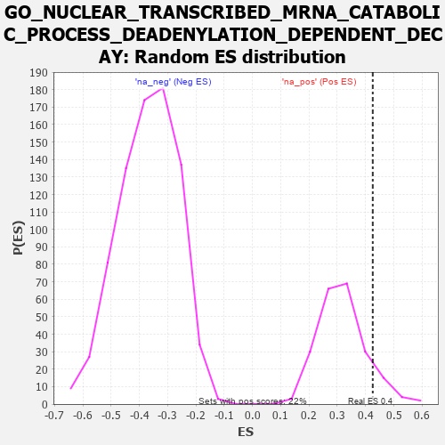

| | | Dataset | 7d |
| Phenotype | NoPhenotypeAvailable |
| Upregulated in class | na_pos |
| GeneSet | GO_NUCLEAR_TRANSCRIBED_MRNA_CATABOLIC_PROCESS_DEADENYLATION_DEPENDENT_DECAY |
| Enrichment Score (ES) | 0.4254672 |
| Normalized Enrichment Score (NES) | 1.3356713 |
| Nominal p-value | 0.10502283 |
| FDR q-value | 0.38769296 |
| FWER p-Value | 1.0 |
Table: GSEA Results Summary
 Fig 1: Enrichment plot: GO_NUCLEAR_TRANSCRIBED_MRNA_CATABOLIC_PROCESS_DEADENYLATION_DEPENDENT_DECAY
Fig 1: Enrichment plot: GO_NUCLEAR_TRANSCRIBED_MRNA_CATABOLIC_PROCESS_DEADENYLATION_DEPENDENT_DECAY
Profile of the Running ES Score & Positions of GeneSet Members on the Rank Ordered List
| PROBE | GENE SYMBOL | GENE_TITLE | RANK IN GENE LIST | RANK METRIC SCORE | RUNNING ES | CORE ENRICHMENT | | 1 | CNOT7 | | | 348 | 0.750 | 0.0163 | Yes |
| 2 | MLH1 | | | 423 | 0.679 | 0.0613 | Yes |
| 3 | CNOT6 | | | 462 | 0.655 | 0.1090 | Yes |
| 4 | CNOT2 | | | 514 | 0.625 | 0.1526 | Yes |
| 5 | PARN | | | 660 | 0.572 | 0.1801 | Yes |
| 6 | WDR61 | | | 734 | 0.549 | 0.2149 | Yes |
| 7 | EDC4 | | | 957 | 0.494 | 0.2265 | Yes |
| 8 | CNOT3 | | | 1274 | 0.435 | 0.2216 | Yes |
| 9 | NOCT | | | 1402 | 0.409 | 0.2384 | Yes |
| 10 | LSM4 | | | 1426 | 0.405 | 0.2679 | Yes |
| 11 | LSM6 | | | 1444 | 0.402 | 0.2979 | Yes |
| 12 | HBS1L | | | 1454 | 0.399 | 0.3287 | Yes |
| 13 | LSM7 | | | 1754 | 0.344 | 0.3187 | Yes |
| 14 | AGO2 | | | 1767 | 0.343 | 0.3446 | Yes |
| 15 | LSM2 | | | 1829 | 0.332 | 0.3635 | Yes |
| 16 | DCP1A | | | 1877 | 0.323 | 0.3835 | Yes |
| 17 | DDX6 | | | 1915 | 0.318 | 0.4043 | Yes |
| 18 | LSM1 | | | 2098 | 0.291 | 0.4047 | Yes |
| 19 | CNOT4 | | | 2161 | 0.283 | 0.4195 | Yes |
| 20 | LSM3 | | | 2282 | 0.263 | 0.4255 | Yes |
| 21 | PDE12 | | | 2608 | 0.211 | 0.4014 | No |
| 22 | PATL1 | | | 2610 | 0.210 | 0.4182 | No |
| 23 | DCPS | | | 2873 | 0.170 | 0.3988 | No |
| 24 | PAN3 | | | 3054 | 0.142 | 0.3876 | No |
| 25 | TUT4 | | | 3394 | 0.090 | 0.3521 | No |
| 26 | CNOT1 | | | 3473 | 0.081 | 0.3487 | No |
| 27 | PAN2 | | | 5807 | -0.408 | 0.0877 | No |
| 28 | TUT7 | | | 5997 | -0.471 | 0.1016 | No |
| 29 | DCP2 | | | 7724 | -1.833 | 0.0311 | No |
Table: GSEA details [plain text format]

Fig 2: GO_NUCLEAR_TRANSCRIBED_MRNA_CATABOLIC_PROCESS_DEADENYLATION_DEPENDENT_DECAY: Random ES distribution
Gene set null distribution of ES for GO_NUCLEAR_TRANSCRIBED_MRNA_CATABOLIC_PROCESS_DEADENYLATION_DEPENDENT_DECAY